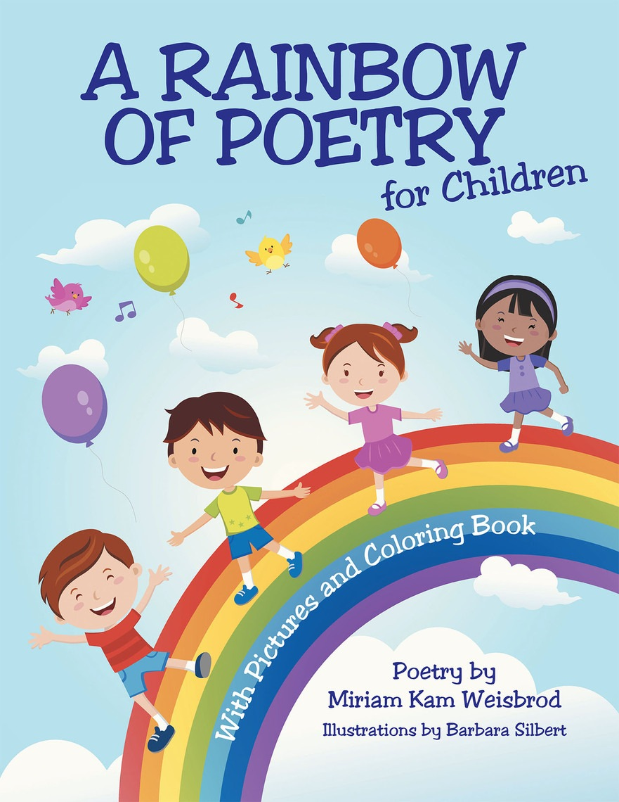
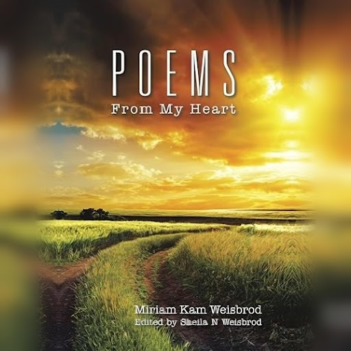

01 / A PRESERVED FLOWERPOEMS FROM MY HEART
I.
Remembering You
A rose, pressed between the pages of a book, holds a memory close.
The poetry of Miriam Kam Weisbrod
Written by Miriam Kam Weisbrod
Edited by Sheila N. Weisbrod
A rose between pages. A portrait on the wall. In Miriam’s poetry, memory has things to hold.
Open the collectionA rose saved
between the leaves
of a book.

Inside Poems From My Heart
Two poems. Two things held close. Miriam's verses find remembrance in the objects that remain.
A rose, pressed between the pages of a book, holds a memory close.
What remains
on the wall.
A young man in uniform is remembered through the portrait that remains on the wall.
Memory, nature, growing older and the wonder of living run through the collection.
Explore the print and ebook editionsMiriam's poetry was published in 2015.
A voice found on the page
The publisher describes Miriam's turn to writing after the loss of her husband. Her poetry records the memories, natural world and everyday moments she chose to put into words.
Author of both poetry collections.
Credited editor of the 2015 Poems From My Heart.
THE OTHER SIDE OF THE PAGE 02 / FOR YOUNGER READERS
A second collection, a different kind of play
With Pictures and Coloring Book

Clowns, daydreams and animals join Miriam's second collection. Here, the poems invite younger readers to look, imagine and color.
A circus clown comes into view.
A child's dream takes shape.
Animals, a garden and familiar wonders.
The poems, in another form.

Poems From My Heart is also available as an unabridged audiobook. This edition is narrated by Eleanor Vance and published by Sheila Weisbrod.
Explore the audiobook on Google PlayPoetry by Miriam Kam Weisbrod. The adult collection edited by Sheila N. Weisbrod.
iUniverse · 2015 · 50 pages
Find the paperback or ebook Paperback ISBN 9781491767900From the heart, to the page.